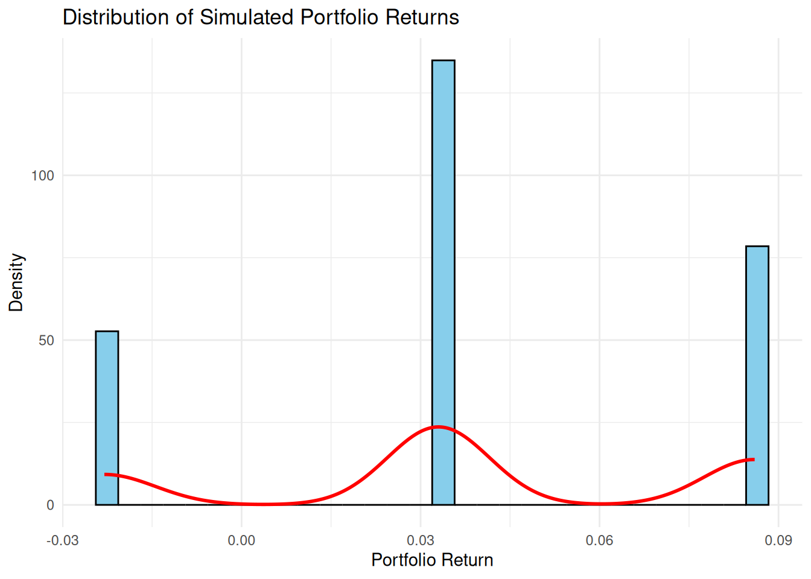
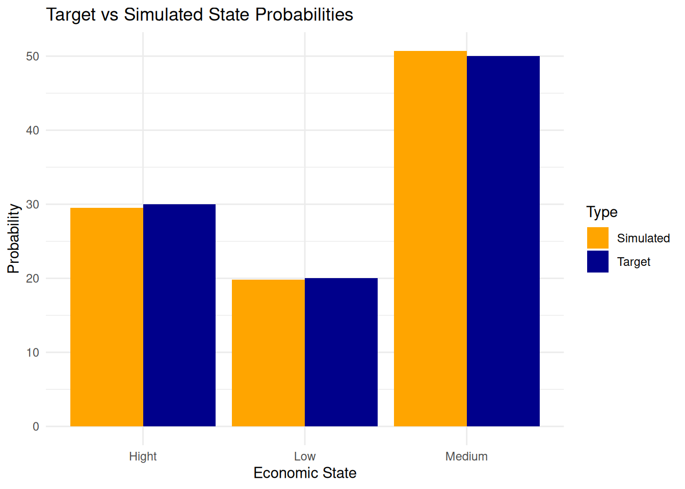
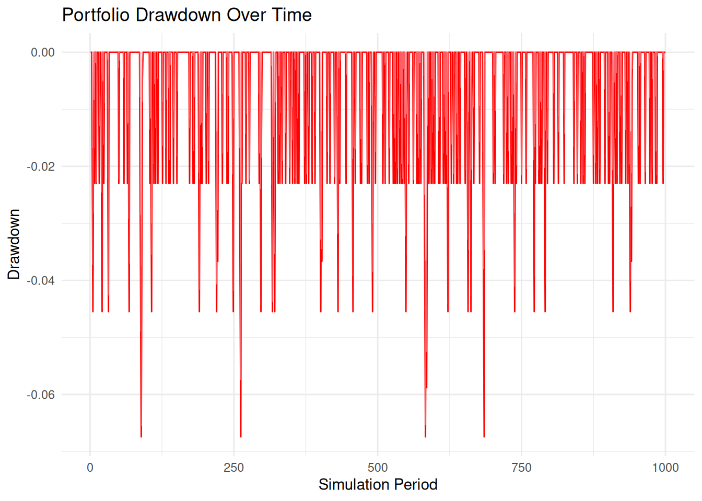
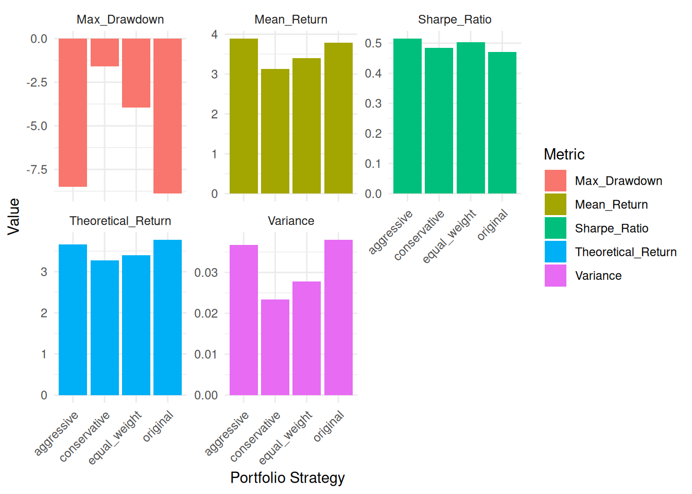
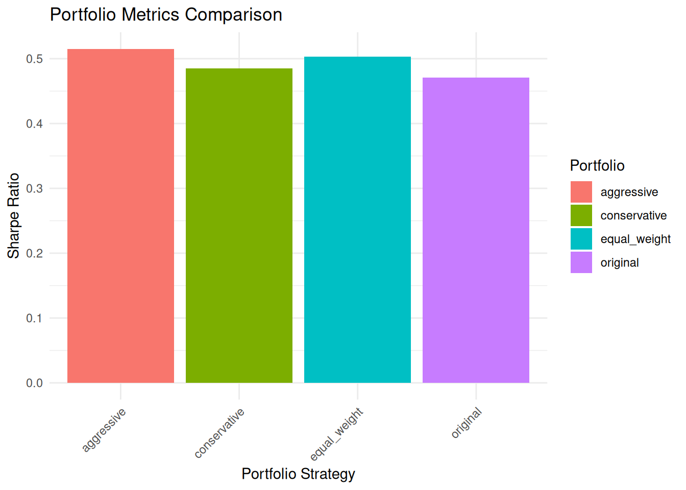

states <- c("Hight", "Medium", "Low")
prob <- c(0.3 , 0.5, 0.2)Project_4_port_sim_anlysis
4.10 Project: Portfolio Simulation and Analysis with Discrete Random Variables
4.10.1 Project Overview
In this project, you will simulate and analyze the performance of a portfolio composed of three assets under uncertain economic conditions. You will model the asset returns using discrete random variables, compute key portfolio metrics like expected return and variance, and understand the economic intuition behind portfolio diversification. This project will also reinforce key programming concepts such as modular functions, control structures, and R’s list structure.
4.10.2 Project Objectives
By the end of this project, you should be able to:
Apply the concept of random variables to model asset returns under uncertainty.
Simulate portfolio performance over multiple periods.
Compute and interpret key portfolio metrics: expected return, variance, and covariance.
Use modular programming, control structures, and lists in R to build efficient and reusable code.
Understand the trade-offs between risk and return in portfolio theory.
4.10.3 Define the Portfolio
- Define three economic states:
"High","Medium", and"Low", and their probabilities: 30%, 50%, and 20%.
Assign discrete returns for three assets under each state:
Asset 1:
c(0.08, 0.04, -0.02)Asset 2:
c(0.12, 0.03, -0.05)Asset 3:
c(0.05, 0.02, 0.01)
asset_1_ret <- c(0.08, 0.04, -0.02)
asset_2_ret <- c(0.12, 0.03, -0.05)
asset_3_ret <- c(0.05, 0.02, 0.01)- Specify portfolio weights: 50% for Asset 1, 30% for Asset 2, and 20% for Asset 3.
portfolio_weights = c(0.5, 0.3, 0.2)
portfolio_weights[1] 0.5 0.3 0.24.10.4 Simulate Portfolio Performance
Write modular functions to:
Simulate a random economic state based on the given probabilities.
Retrieve asset returns for the simulated state using a list structure.
Compute the portfolio return as the weighted sum of asset returns.
# Simulate a random economic state
set.seed(123) # Set seed for reproducibility
simulated_state <- sample(states, size = 1, prob = prob)
state_index <- match(simulated_state, states) #state based on probability as an idex
# Fetch returns for each asset
sim_asset_1_ret <- asset_1_ret[state_index]
sim_asset_2_ret <- asset_2_ret[state_index]
sim_asset_3_ret <- asset_3_ret[state_index]
# Combine results into a data frame
all_sim_asset_ret <- data.frame(
Simulated_State = simulated_state,
Asset_1_Return = sim_asset_1_ret,
Asset_2_Return = sim_asset_2_ret,
Asset_3_Return = sim_asset_3_ret
)
# Convert returns to a vector
asset_returns <- c(all_sim_asset_ret$Asset_1_Return,
all_sim_asset_ret$Asset_2_Return,
all_sim_asset_ret$Asset_3_Return)
# Output the results
print(all_sim_asset_ret) Simulated_State Asset_1_Return Asset_2_Return Asset_3_Return
1 Medium 0.04 0.03 0.02For a random state Medium, the weighted simulated return is 3.3%.
# Calculate portfolio return using vector multiplication
portfolio_return <- sum(portfolio_weights * asset_returns)
# Print the result
cat("Portfolio Return:", round(portfolio_return * 100, 2), "%")Portfolio Return: 3.3 %# For the contributions breakdown:
contributions <- data.frame(
Asset = paste("Asset", 1:length(portfolio_weights)), #since lenght of weights must be equal to the number of instruments, this can be used to make the labels dynamic
Weight = portfolio_weights,
Return = asset_returns,
Contribution = portfolio_weights * asset_returns
)
print(contributions) Asset Weight Return Contribution
1 Asset 1 0.5 0.04 0.020
2 Asset 2 0.3 0.03 0.009
3 Asset 3 0.2 0.02 0.004The weighted return of each instrument (contribution column) is found by multiplying the weight and the return for that instrument, given a drawn economic state.
Simulate portfolio performance over 1,000 periods and store the results in a list. Each element should include:
The simulated state.
Returns for each asset.
The portfolio return.
# Set seed for reproducibility
set.seed(123)
# Create simulation function
simulate_portfolio <- function(states, prob, asset_returns, weights) {
# Simulate state
state <- sample(states, size = 1, prob = prob)
state_index <- match(state, states)
# Get returns for the simulated state
period_returns <- sapply(asset_returns, function(x) x[state_index])
# Calculate portfolio return
port_return <- sum(weights * period_returns)
# Return results as a list
return(list(
state = state,
asset_returns = period_returns,
portfolio_return = port_return
))
}
# Prepare asset returns as a list
asset_returns_list <- list(
asset_1 = asset_1_ret,
asset_2 = asset_2_ret,
asset_3 = asset_3_ret
)
# Run 1000 simulations
simulations <- replicate(
n = 1000,
simulate_portfolio(states, prob, asset_returns_list, portfolio_weights),
simplify = FALSE
)
# View first few results
head(simulations, 3)[[1]]
[[1]]$state
[1] "Medium"
[[1]]$asset_returns
asset_1 asset_2 asset_3
0.04 0.03 0.02
[[1]]$portfolio_return
[1] 0.033
[[2]]
[[2]]$state
[1] "Hight"
[[2]]$asset_returns
asset_1 asset_2 asset_3
0.08 0.12 0.05
[[2]]$portfolio_return
[1] 0.086
[[3]]
[[3]]$state
[1] "Medium"
[[3]]$asset_returns
asset_1 asset_2 asset_3
0.04 0.03 0.02
[[3]]$portfolio_return
[1] 0.033# Calculate summary statistics
summary_stats <- data.frame(
portfolio_returns = sapply(simulations, function(x) x$portfolio_return)
)
# Print summary of portfolio returns
cat("\nPortfolio Return Summary Statistics in %:\n")
Portfolio Return Summary Statistics in %:print(summary(summary_stats$portfolio_returns*100)) Min. 1st Qu. Median Mean 3rd Qu. Max.
-2.300 3.300 3.300 3.755 8.600 8.600 The prints [1] - [3] show examples of the first 3 simulations and just lists the inputted returns (return expectations) for each instruments and the total portfolio return.
The descriptive statics show that the median / average return over 1000 simulations is 3.3% and 3.755%. The lower and max results aren’t too useful here as they only show worst and best case portfolios.
4.10.5 Analyze Portfolio Performance
Compute summary statistics for the simulated portfolio returns:
Mean return.
Variance of returns.
Compare the simulated mean return with the theoretical expected portfolio return, calculated as:E(Rportfolio)=∑i=1nwi⋅E(ri)
(Optional) Compute the theoretical portfolio variance:Var(Rportfolio)=∑i=1n(wi)2⋅Var(ri)+∑i≠jwi⋅wj⋅Cov(ri,rj)
# 1. Summary statistics from simulation
sim_returns <- sapply(simulations, function(x) x$portfolio_return)
sim_mean <- mean(sim_returns)
sim_variance <- var(sim_returns)
sim_stdev <- sd(sim_returns)
# Print results
cat("\nSimulation Results:\n")
Simulation Results:cat("Mean Return:", round(sim_mean * 100, 4), "%\n")Mean Return: 3.7547 %cat("Return Variance:", round(sim_variance, 6), "\n")Return Variance: 0.00143 cat("Return Standard deviation:", sim_stdev * 100, "%\n")Return Standard deviation: 3.781981 %# 2. Theoretical expected return
# First calculate expected return for each asset
expected_returns <- c(
sum(asset_1_ret * prob),
sum(asset_2_ret * prob),
sum(asset_3_ret * prob)
)
theoretical_return <- sum(portfolio_weights * expected_returns)
# 3. Theoretical variance
# Calculate variance for each asset
asset_variances <- c(
sum(prob * (asset_1_ret - expected_returns[1])^2),
sum(prob * (asset_2_ret - expected_returns[2])^2),
sum(prob * (asset_3_ret - expected_returns[3])^2)
)
# Calculate covariances
cov_matrix <- matrix(0, 3, 3)
for(i in 1:3) {
for(j in 1:3) {
if(i == j) {
cov_matrix[i,j] <- asset_variances[i]
} else {
# Calculate covariance
asset_i <- c(asset_1_ret, asset_2_ret, asset_3_ret)[[i]]
asset_j <- c(asset_1_ret, asset_2_ret, asset_3_ret)[[j]]
cov <- sum(prob * (asset_i - expected_returns[i]) *
(asset_j - expected_returns[j]))
cov_matrix[i,j] <- cov
}
}
}
theoretical_variance <- t(portfolio_weights) %*% cov_matrix %*% portfolio_weights
theoretical_stdev <- sqrt(theoretical_variance)
cat("\nTheoretical Results:\n")
Theoretical Results:cat("Expected Return:", round(theoretical_return * 100, 4), "%\n")Expected Return: 3.77 %cat("Portfolio Variance:", round(theoretical_variance, 6), "\n")Portfolio Variance: 0.00025 # Compare simulation vs theoretical
cat("\nComparison:\n")
Comparison:cat("Difference in Returns (Simulation - Theoretical) in %:",
round((sim_mean - theoretical_return) * 100, 4), "%\n")Difference in Returns (Simulation - Theoretical) in %: -0.0153 %cat("Difference in Variance (Simulation - Theoretical):",
round(sim_variance - theoretical_variance, 6), "\n")Difference in Variance (Simulation - Theoretical): 0.00118 cat("Difference in Standard deviation (Simulation - Theoretical) in %:",
round(sim_variance - theoretical_stdev, 6)*100 , "\n")Difference in Standard deviation (Simulation - Theoretical) in %: -1.439 The simulation results show a smaller return by 0.0153% and also a smaller standard deviation by 1.439% compared to the theoretical values.
4.10.6 Visualize Results
Create a histogram of the simulated portfolio returns.
Calculate and display the frequency of each economic state in the simulation to verify that the probabilities were correctly implemented.
# Load required package for plotting library(ggplot2) # 1. Create histogram of portfolio returns sim_returns_df <- data.frame(Returns = sim_returns) ggplot(sim_returns_df, aes(x = Returns)) + geom_histogram(aes(y = ..density..), bins = 30, fill = "skyblue", color = "black") + geom_density(color = "red", linewidth = 1) + labs(title = "Distribution of Simulated Portfolio Returns", x = "Portfolio Return", y = "Density") + theme_minimal()Warning: The dot-dot notation (`..density..`) was deprecated in ggplot2 3.4.0. ℹ Please use `after_stat(density)` instead.
# 2. Calculate state frequencies simulated_states <- sapply(simulations, function(x) x$state) state_frequencies <- table(simulated_states) / length(simulated_states) state_counts <- table(simulated_states) # Absolute count of occurrences theoretical_counts <- prob * 1000 # Create comparison data frame state_comparison <- data.frame( State = states, theoretical_counts = theoretical_counts, Simulated_Count = as.numeric(state_counts[states]), # Use count instead of frequency Theoretical_probability_Percent = prob *100, Simulated_Frequency_Percent = as.numeric(state_frequencies[states]) * 100 ) # Calculate difference state_comparison$Difference_in_percent <- (state_comparison$Simulated_Frequency - state_comparison$Theoretical_probability) # Print results print(state_comparison)State theoretical_counts Simulated_Count Theoretical_probability_Percent 1 Hight 300 295 30 2 Medium 500 507 50 3 Low 200 198 20 Simulated_Frequency_Percent Difference_in_percent 1 29.5 -0.5 2 50.7 0.7 3 19.8 -0.2# Create bar plot comparing target vs simulated probabilities state_comparison_long <- data.frame( State = rep(state_comparison$State, 2), Probability = c(state_comparison$Theoretical_probability, state_comparison$Simulated_Frequency), Type = rep(c("Target", "Simulated"), each = length(states)) ) ggplot(state_comparison_long, aes(x = State, y = Probability, fill = Type)) + geom_bar(stat = "identity", position = "dodge") + labs(title = "Target vs Simulated State Probabilities", x = "Economic State", y = "Probability") + theme_minimal() + scale_fill_manual(values = c("Target" = "darkblue", "Simulated" = "orange"))
The histogram shows the frequency of portfolio returns based on the state. Visually, it i evident that the medium scenario is most frequent, which is expected given that it had the highest specified probability.
The second output (dataframe), shows:
Simulated vs theoretical count of occurrences for each state over 1000 runs. The simulated results show for high and low states show 5 and 2 occurrences less than theoretical, while the medium scenario occurred 7 times more than the theoretical.
Simulated vs theoretical percent columns show the same results but in percentage scaling rather than absolute scaling.
# Function to calculate maximum drawdown
calculate_max_drawdown <- function(returns) {
# Calculate cumulative returns (starting at 1)
cum_returns <- cumprod(1 + returns)
# Calculate running maximum
running_max <- cummax(cum_returns)
# Calculate drawdowns
drawdowns <- (cum_returns - running_max) / running_max
# Get the maximum drawdown
max_drawdown <- min(drawdowns)
# Find when the max drawdown occurred
max_dd_index <- which.min(drawdowns)
return(list(
max_drawdown = max_drawdown,
max_dd_index = max_dd_index,
all_drawdowns = drawdowns,
cumulative_returns = cum_returns
))
}
# Calculate max drawdown from our simulated returns
drawdown_results <- calculate_max_drawdown(sim_returns)
# Create visualization of drawdown over time
drawdown_df <- data.frame(
Period = 1:length(sim_returns),
Drawdown = drawdown_results$all_drawdowns,
Cumulative_Return = drawdown_results$cumulative_returns
)
# 1. Drawdown plot
p1 <- ggplot(drawdown_df, aes(x = Period, y = Drawdown)) +
geom_line(color = "red") +
geom_area(fill = "pink", alpha = 0.5) +
labs(title = "Portfolio Drawdown Over Time",
x = "Simulation Period",
y = "Drawdown") +
theme_minimal()
p1
# Print results
cat("\nDrawdown Analysis:\n")
Drawdown Analysis:cat("Maximum Drawdown:", round(drawdown_results$max_drawdown * 100, 2), "%\n")Maximum Drawdown: -6.74 %cat("Maximum Drawdown occurred at period:", drawdown_results$max_dd_index, "\n")Maximum Drawdown occurred at period: 262 cat("Average Drawdown:", round(mean(drawdown_results$all_drawdowns) * 100, 2), "%\n")Average Drawdown: -0.57 %cat("Standard Deviation of Drawdowns:",
round(sd(drawdown_results$all_drawdowns) * 100, 2), "%\n")Standard Deviation of Drawdowns: 1.19 %As an extra analysis, the Drawdown analysis has been done, which is one of the key tools in assessing portfolio risk for the simulated portfolio. In this example a drawdown can occur only when a portfolio goes to a lower economic states and gets reduced returns from simulation to simulation (i.e. from high to medium case and from medium to low case).
In the output, the maximum loss is 6.74%, while the average loss is 0.57%.
The standard deviation of a drawdown is 1.19% indicating that on average the max drawdown changes gravitated closely to the mean drawdown value.
4.10.7 Reflection and Extensions
- Reflect on the relationship between diversification and risk. How does combining assets with different return profiles reduce portfolio variance?
If the instruments in a portfolio are not perfectly positively correlated (have a contrivance < 1), they will provide diversification benefits, i.e. have higher return, with lower risk (lower standard deviation). Ideally, if the instruments are negatively correlated, this would further improve the diversification and have an even better risk-adjusted return (Sharpe ratio).
- Add a fourth asset to the portfolio and observe its impact on portfolio metrics. Explore how changing portfolio weights affects expected return and variance.
library(tidyr)
# Set risk free rate used for Sharpe ratio calculations
rf_rate <- 0.02
# Create a new conservative asset
asset_4_ret <- c(0.03, 0.03, 0.02) # New conservative asset
# Compare different portfolio weights
# Create several portfolio weight combinations to test
portfolio_combinations <- list(
original = c(0.5, 0.3, 0.2, 0), # Original weights with 0 in new asset
equal_weight = c(0.25, 0.25, 0.25, 0.25), # Equal distribution
conservative = c(0.2, 0.2, 0.2, 0.4), # Higher weight in conservative asset
aggressive = c(0.3, 0.4, 0.2, 0.1) # Lower weight in conservative asset
)
# Function to calculate portfolio metrics
calculate_portfolio_metrics <- function(weights, asset_returns_list, rf_rate) {
# Simulate returns
simulations <- replicate(
n = 1000,
simulate_portfolio(states, prob, asset_returns_list, weights),
simplify = FALSE
)
# Calculate metrics
sim_returns <- sapply(simulations, function(x) x$portfolio_return)
# Calculate expected returns for each asset & standard dev
expected_returns <- sapply(asset_returns_list, function(x) sum(x * prob))
theoretical_return <- sum(weights * expected_returns)
portfolio_stdev <- sd(sim_returns)
# Using (mean return - risk free rate) / standard deviation
sharpe_ratio <- (mean(sim_returns) - rf_rate) / portfolio_stdev
list(
mean_return = mean(sim_returns),
stdev = portfolio_stdev,
theoretical_return = theoretical_return,
max_drawdown = calculate_max_drawdown(sim_returns)$max_drawdown,
sharpe_ratio = sharpe_ratio
)
}
# Prepare asset returns list with four assets
asset_returns_list <- list(
asset_1 = asset_1_ret,
asset_2 = asset_2_ret,
asset_3 = asset_3_ret,
asset_4 = asset_4_ret
)
# Recalculate metrics for each portfolio combination with Sharpe Ratio
results <- lapply(portfolio_combinations, function(weights) {
calculate_portfolio_metrics(weights, asset_returns_list, rf_rate)
})
# Create updated comparison table
comparison_df <- data.frame(
Portfolio = names(portfolio_combinations),
Mean_Return = sapply(results, function(x) round(x$mean_return * 100, 2)),
Theoretical_Return = sapply(results, function(x) round(x$theoretical_return * 100, 2)),
Variance = sapply(results, function(x) round(x$stdev, 6)),
Max_Drawdown = sapply(results, function(x) round(x$max_drawdown * 100, 2)),
Sharpe_Ratio = sapply(results, function(x) round(x$sharpe_ratio, 3))
)
# Print the comparison data frame
print(comparison_df) Portfolio Mean_Return Theoretical_Return Variance Max_Drawdown
original original 3.79 3.77 0.037924 -8.89
equal_weight equal_weight 3.40 3.40 0.027842 -3.94
conservative conservative 3.13 3.28 0.023379 -1.59
aggressive aggressive 3.89 3.66 0.036694 -8.51
Sharpe_Ratio
original 0.471
equal_weight 0.503
conservative 0.485
aggressive 0.515# Updated visualization including Sharpe Ratio
# Use pivot_longer instead of gather (gather is deprecated)
library(tidyr)
library(ggplot2)
# Reshape the data to long format
comparison_long <- pivot_longer(comparison_df, cols = -Portfolio, names_to = "Metric", values_to = "Value")
# Visualize the comparison
ggplot(comparison_long, aes(x = Portfolio, y = Value, fill = Metric)) +
geom_bar(stat = "identity", position = "dodge") +
facet_wrap(~Metric, scales = "free_y") +
theme_minimal() +
theme(axis.text.x = element_text(angle = 45, hjust = 1)) +
labs(y = "Value",
x = "Portfolio Strategy")
# Create specific Sharpe Ratio comparison plot
ggplot(comparison_df, aes(x = Portfolio, y = Sharpe_Ratio, fill = Portfolio)) +
geom_bar(stat = "identity") +
theme_minimal() +
theme(axis.text.x = element_text(angle = 45, hjust = 1)) +
labs(title = "Portfolio Metrics Comparison",
y = "Sharpe Ratio",
x = "Portfolio Strategy")
From the code above, a conservative asset was added to the portfolio (considered conservative because of the low fluctuation of returns between scenarios).
The mean return is lower for non-aggressive strategies compared to the original strategy. However, in risk adjusted terms (Sharpe_Ratio), adding a 4th instrument does provide a higher risk-adjusted return in all portfolio allocation styles.
The Risk metrics, Maximum drawdown and standard deviations become better in all cases, where significant improvements can be seen for conservative and equal weighted portfolio.
Therefore, from both a risk and risk-adjusted perspective there are obvious diversification benefits from adding a 4th instrument to the portfolio. This is evident as across all metrics the original (3 instrument) portfolio performed the worst across all risk and risk-adjusted return metrics.
Given a risk-neutral investor, the conservative or equal weighted portfolio would give the highest risk-adjustment returns.
For a risk averse investor, a conservative portfolio is recommended as the maximum draw down and standard deviation ar the lowest, while still offering a good Sharpe ratio.
Lastly, even lower risk portfolio can be combined with leverage to get the higher returns, while maintain the same Sharpe ratio (since sharpe ratio is not impacted by leverage). This way an investor can achieve a desired return target while getting a superior risk trade off.